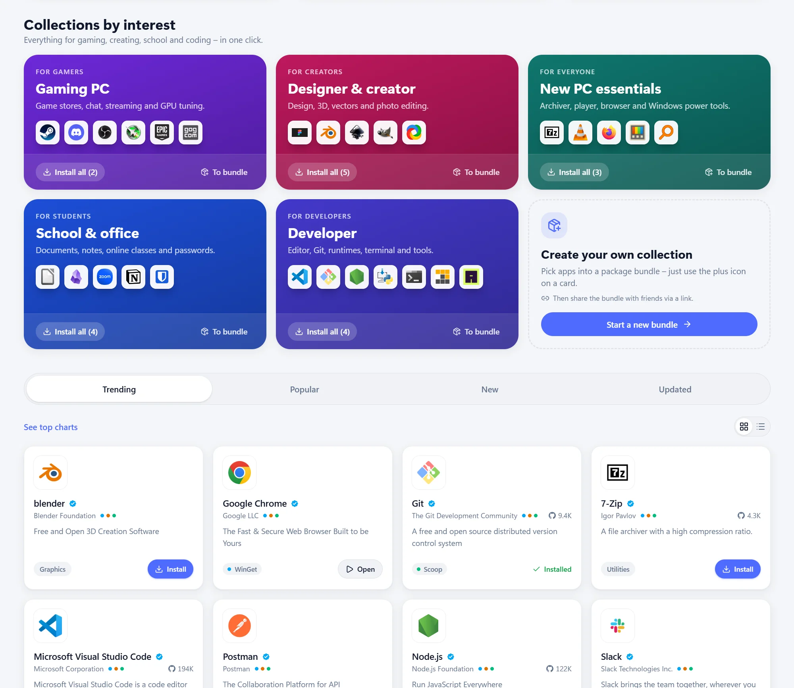
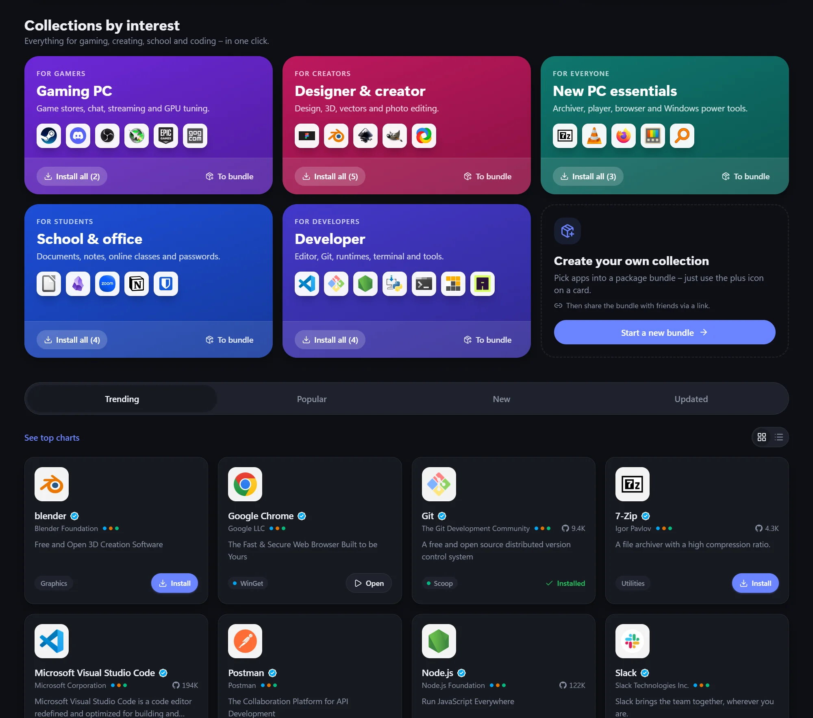
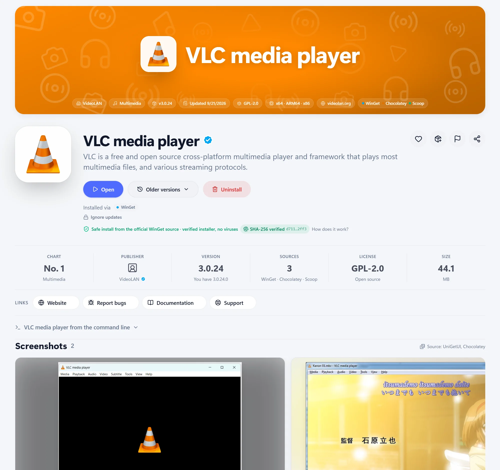
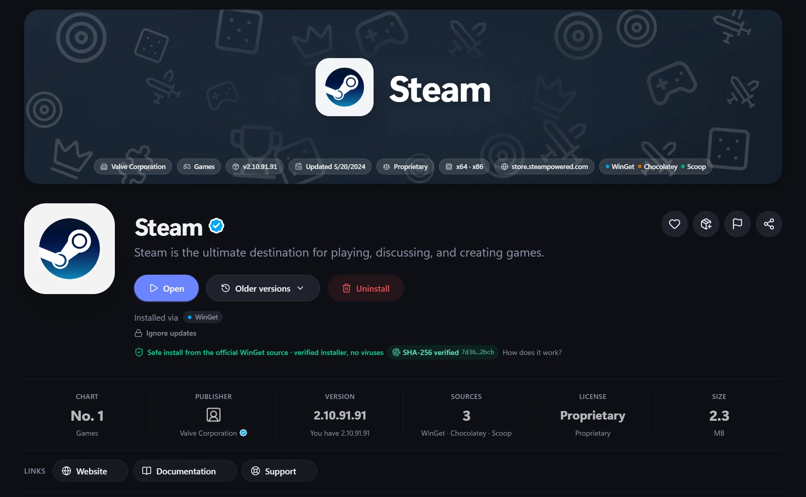
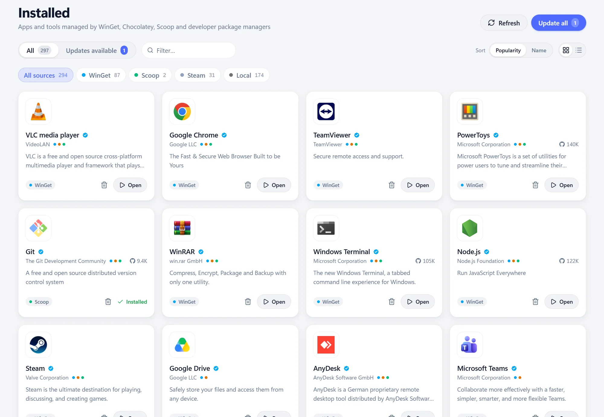
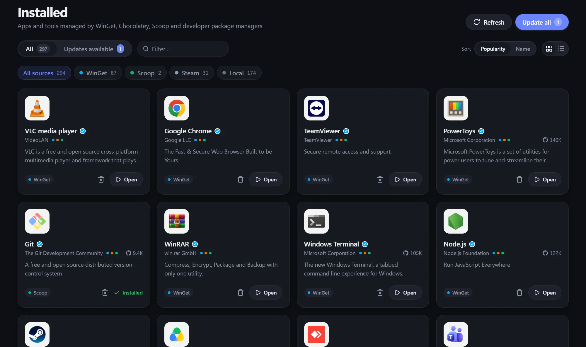

Install options
As administrator, interactively, a specific (even older) version, architecture, scope, custom arguments – or just download the installer.
Features
One app = one card. When an app is available from several package managers, its card shows every source and you choose where to install from.
A “Today” home page with tips from hundreds of well-known apps, category picks and a new App of the Day every day, categories, charts and collections by profession. Quick search with Ctrl+K covers the catalog and searches package managers live.


A large banner whose color adapts to the app’s icon. A screenshot gallery with a full-screen viewer, what’s new, privacy details and quick links to the website, GitHub, documentation and support.


An overview of every app on your PC – including programs installed outside WinGet, Microsoft Store apps and Steam games. Install all available updates with a single “Update all” button.


Uninstallers often leave settings, caches, shortcuts and registry keys behind. After an uninstall, HubGet finds them – in AppData, Program Files and ProgramData, the Start menu, on the desktop and in the Windows registry – and offers to delete them. Or it cleans them up right away and just lets you know.
With install monitoring, HubGet takes a disk and registry snapshot before and after an install. It remembers what the installer created and offers to remove all of it after an uninstall – even items it couldn’t find by name.
OBS Studio – leftovers after uninstall
Files and folders
Windows registry
Registry keys are saved to a backup (.reg) before they’re deleted.
What starts as soon as you sign in to Windows? HubGet shows programs from the registry, the Startup folder, Task Scheduler and Store apps in one place – with their name, publisher and icon.
Startup apps
A disabled program won’t start but stays in the list.
Before you install an app, see how others rate it. Every app shows its star average, the rating breakdown and the most helpful reviews – sign in with GitHub to add your own.
As administrator, interactively, a specific (even older) version, architecture, scope, custom arguments – or just download the installer.
Build your own shareable bundle of apps – a new PC set up in five minutes. Your profile with its settings as JSON or a readable HTML page, a WinGet export, favorites.
A custom Windows 11-style title bar, smooth animations and instant page transitions. Light and dark theme that follows Windows. A welcome tour shows you around on first launch.
Operation history and logs, clearing package manager caches. In seven languages: English, Czech, German, Spanish, French, Portuguese and Chinese.
Signed-in users add current screenshots to apps. HubGet downscales them to WebP without metadata, and everyone sees them once approved. Anything inappropriate can be reported.
Favorites, your package bundle and preferences on all your computers. Signing in is optional – everything else works without an account.
Runs in the background
Closing the window tucks HubGet away into the notification area next to the clock, where running installs finish quietly. The transparent monochrome icon adapts to light and dark taskbars, and its tooltip shows how many updates are available.